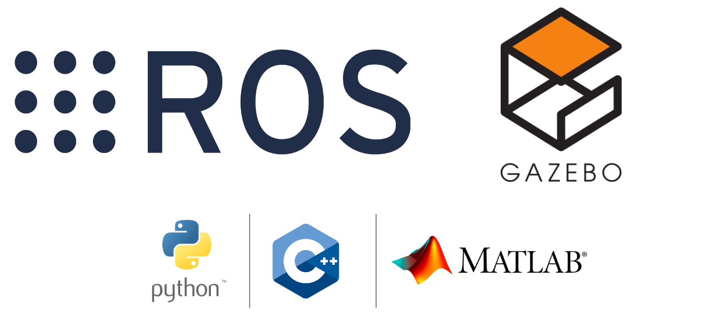

Getting started with ROS¶
The Robot Operating System (ROS) is a flexible framework for writing robot software. It is a collection of tools, libraries, and conventions that aim to simplify the task of creating complex and robust robot behavior across a wide variety of robotic platforms.
We have planned this competition around ROS because of its features as well as its widespread use in robotics research and industry.

To get started with ROS (if you are a beginner), we recommend you follow the “Beginner Level” tutorials in the official ROS Tutorials. Ensure you complete at least the following:
WIP
ROS OnRamp!¶
Whether you are a beginner or a more advanced ROS developer, we recommend you take some time to review the following ROS tutorials.
- ROS Official Tutorials - Ensure you complete at least chapters 5, 6, and 12.
- ROS Tutorial Youtube Playlist (Strongly recommended for beginners) - Alternatively, we recommend you cover at least parts 1-9. The content is excellent!
Note
Your overall learning experience in this competition is strongly dependent on how much of the fundamental concepts of ROS you can grasp early on. Hence, we strongly recommend that you put in the time to use these resources.
Writing your First ROS Package¶
After you complete the required tutorials listed above, you can start setting up the workspace.
Assuming the workspace at ~/ros2_ws/ as completed from the steps done in setting up your workspace,
This should be your folder structure till now.
~/ros2_ws/
├── build/
│ ├── .
│ └── .
├── install/
│ ├── .
│ └── .
├── log/
│ ├── .
│ └── .
└── src/
├── CMakeLists.txt
└── parc-engineers-league/
├── parc_robot/
│ ├── .
│ ├── .
│ ├── CMakeLists.txt
│ └── package.xml
├── .
└── .
First step is to create your solution folder in ~/ros2_ws/src/, we can call it parc_solutions for instance.
TODO: Mention Python
And here you can create a new ROS package called test_publisher (for example) by running the command below,
ros2 pkg create test_publisher --build-type ament_cmake --dependencies rclpy std_msgs geometry_msgs
<!-- catkin_create_pkg test_publisher roscpp rospy std_msgs geometry_msgs -->
Moving the Robot Programmatically¶
Setting up your workspace guide has already shown how to control the robot with keyboard using teleoperation
But this guide will help you to move the robot by publishing commands to /cmd_vel topic programmically using Python and C++. In the competition, you would have to choose one of these languages/platforms to interact with ROS.
To do this, create a file, robot_publisher.py inside scripts folder in your ROS package (for example test_publisher) and make it executable.
mkdir test_publisher/scripts
touch test_publisher/scripts/robot_publisher.py
chmod +x test_publisher/scripts/robot_publisher.py
Note
You need to change the permission of the file to executable to be able to run (as done in the last command shown above).
Now open the file and copy and paste the following code inside:
#!/usr/bin/env python3
"""
Script to move Robot
"""
import rclpy
from geometry_msgs.msg import Twist
import time
def move_robot():
rospy.init_node('robot_publisher', anonymous=True)
# Create a publisher which can "talk" to Robot and tell it to move
pub = rospy.Publisher('/cmd_vel', Twist, queue_size=10)
# Set publish rate at 10 Hz
rate = rospy.Rate(10)
# Create a Twist message and add linear x and angular z values
move_cmd = Twist()
######## Move Straight ########
print("Moving Straight")
move_cmd.linear.x = 0.3 # move in X axis at 0.3 m/s
move_cmd.angular.z = 0.0
now = time.time()
# For the next 3 seconds publish cmd_vel move commands
while time.time() - now < 3:
pub.publish(move_cmd) # publish to Robot
rate.sleep()
######## Rotating Counterclockwise ########
print("Rotating")
move_cmd.linear.x = 0.0
move_cmd.angular.z = 0.2 # rotate at 0.2 rad/sec
now = time.time()
# For the next 3 seconds publish cmd_vel move commands
while time.time() - now < 3:
pub.publish(move_cmd) # publish to Robot
rate.sleep()
######## Stop ########
print("Stopping")
move_cmd.linear.x = 0.0
move_cmd.angular.z = 0.0 # Giving both zero will stop the robot
now = time.time()
# For the next 1 seconds publish cmd_vel move commands
while time.time() - now < 1:
pub.publish(move_cmd) # publish to Robot
rate.sleep()
print("Exit")
if __name__ == '__main__':
try:
move_robot()
except rospy.ROSInterruptException:
pass
This code will make the robot move straight for 4 seconds, rotate counterclockwise for 3 seconds and then stop.
Compile and Run¶
Note
For C++, we need to update the CMakeLists.txt file to include our new program. Add the following line to the CMakeLists.txt file:
Run the following command to compile the code:
To see it working, first run the robot in simulation by running the following command in one terminal
And run the following command in another terminal to run this new program:
If you have set up everything well, you should see the robot moving in Gazebo as below: